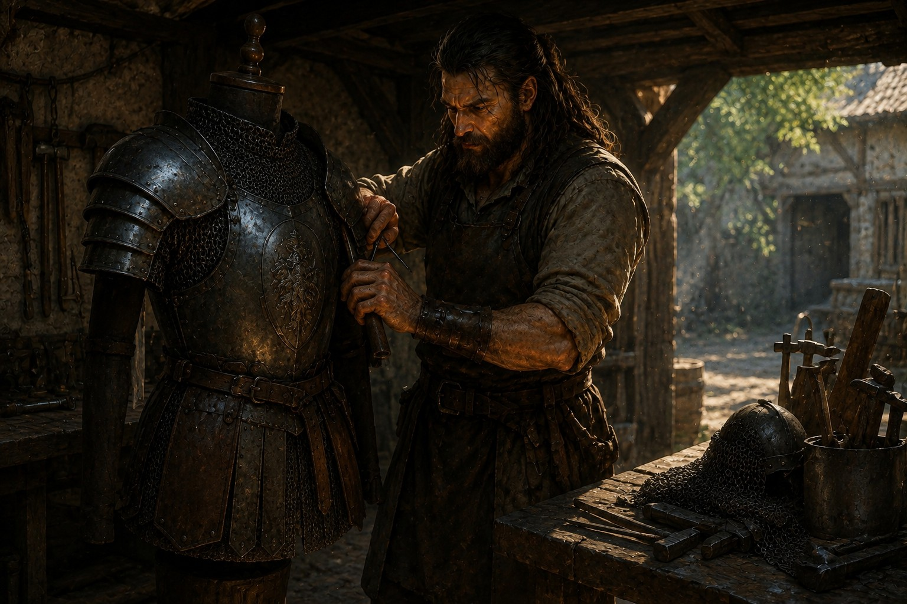
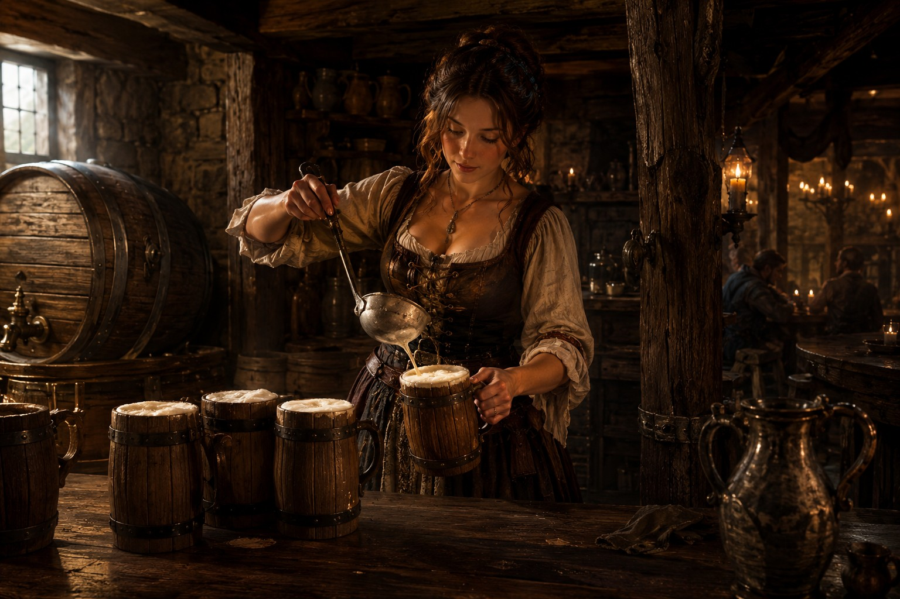
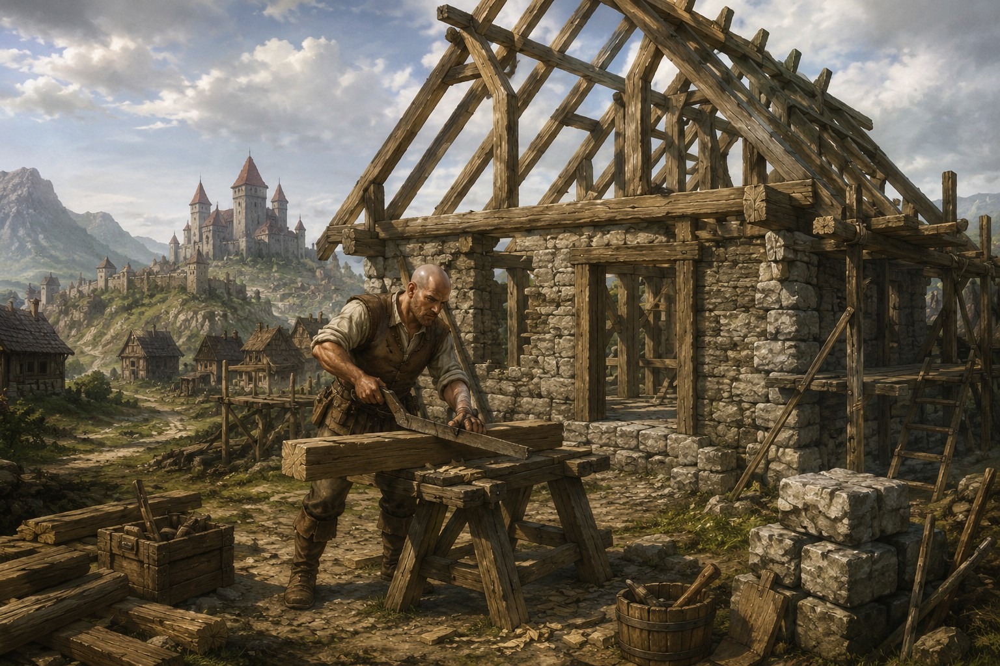
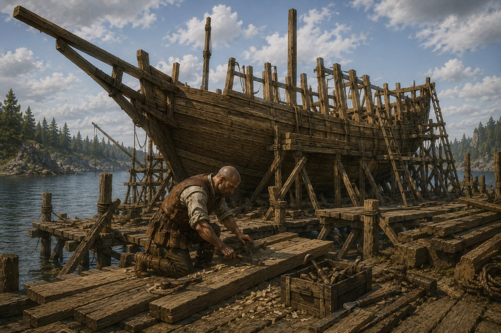
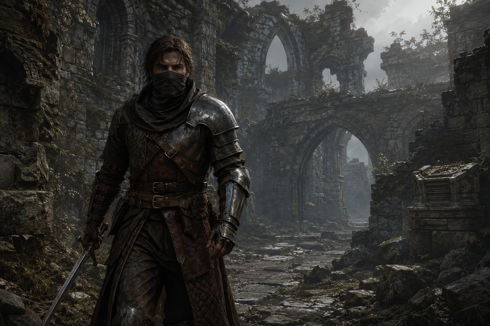
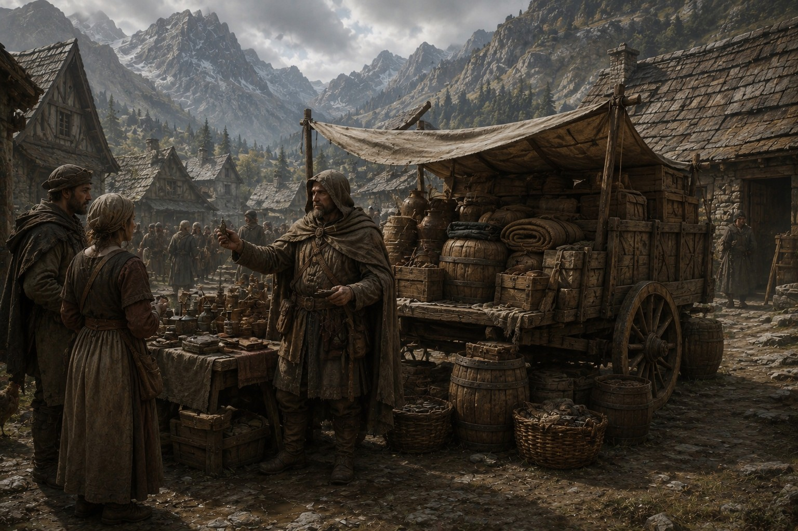
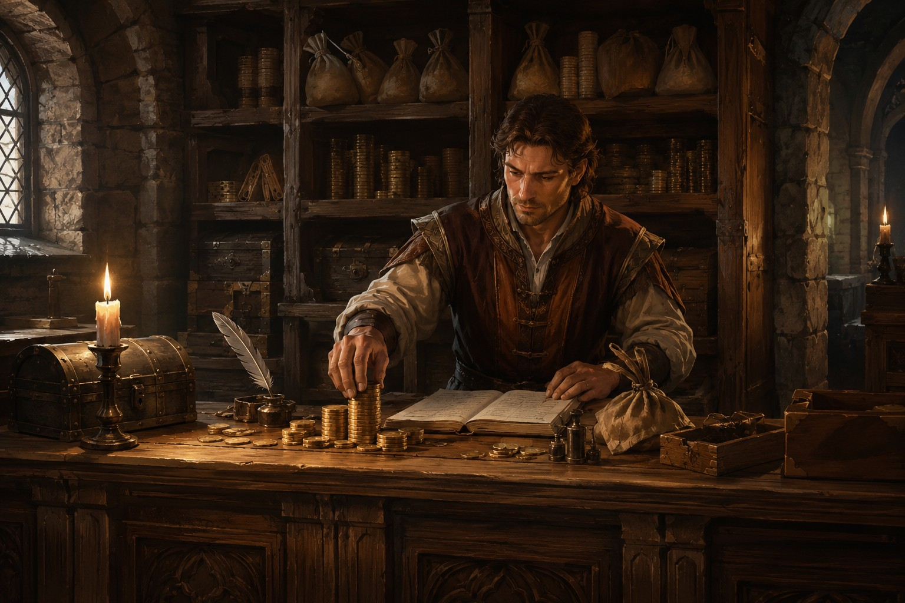

Choisir sa place dans le monde
Les métiers
du Nouvel Âge
Un personnage choisit un métier principal et un métier secondaire. Ensemble, ces professions font circuler les ressources, les savoir-faire et les histoires entre les six royaumes.

Le principe
Se spécialiser pour mieux collaborer.
Les métiers ne sont pas de simples titres. Ils organisent la production, la défense, le commerce, l’administration et la culture du serveur. Aucun personnage n’est censé tout maîtriser seul.
Votre spécialité obligatoire
Métiers principaux
6 professions01Métier principal⚒ Forgeron / ArmurierMaître du feu, du métal et de l’équipement de guerre.

Le Forgeron/Armurier raffine les minerais, forge et répare l’équipement métallique, puis fournit aux aventuriers comme aux armées les armes capables de faire la différence.
CoopérationTravaille notamment avec les Récolteurs pour les minerais et les Alchimistes pour la poudre à canon.
Du minerai à l’équipement
Pilier de l’artisanat du continent, le Forgeron/Armurier transforme les minerais bruts en matériaux raffinés avant de les façonner. Il fabrique et répare des armes, des armures et de nombreux objets métalliques, depuis l’équipement commun jusqu’aux créations d’exception.
Avant toute fabrication, il doit raffiner les minerais qu’il a récoltés ou achetés dans des forges. Une fois les métaux prêts, il travaille dans des ateliers spécifiques afin de produire des équipements adaptés aux aventuriers, aux guerriers et aux défenseurs des royaumes.
Armes avancées et assemblage
Les armes les plus avancées demandent un travail plus complexe. La lame, la garde, la poignée et les autres composants doivent être fabriqués séparément avec soin avant l’assemblage final.
Ces créations spéciales peuvent offrir des mouvements, des techniques et des capacités de combat impossibles à réaliser avec des armes plus communes.
Au service des armées
Le Forgeron/Armurier participe directement à l’effort de guerre. Il peut produire des canons et diverses munitions, notamment des flèches en fer ou des boulets de canon.
La fabrication des munitions de canon nécessite toutefois de la poudre à canon fournie par un Alchimiste/Médecin. Cette dépendance renforce la coopération entre les professions.
Pour quel joueur ?Ce métier s’adresse aux passionnés du travail du métal, de la chaleur de la forge et du rythme des marteaux sur l’enclume. Le forgeron met son talent au service de tous, au quotidien comme sur les champs de bataille.
02Métier principal🍺 Tavernier / AgriculteurDe la terre à la table, il nourrit et rassemble le royaume.

Producteur, éleveur, cuisinier, brasseur et aubergiste, le Tavernier/Agriculteur maîtrise toute la chaîne alimentaire et fait de son établissement un véritable lieu de vie.
CoopérationSe fournit auprès des autres métiers pour certains ingrédients et auprès des Reproducteurs pour les œufs destinés aux croquettes.
Cultures et élevages
Son activité commence dans les champs. Les graines, récoltées ou achetées, sont cultivées en extérieur ou sous serre dans des carrés de culture entretenus grâce aux engrais et à un système d’irrigation.
Il élève également des animaux de ferme pour produire du lait, de la viande, de la laine, des œufs et d’autres ressources essentielles. L’apiculture lui permet de récolter du miel, tandis que la plantation d’arbres, d’arbustes et de buissons contribue à embellir les villes et les domaines privés.
Cuisine et brassage
À partir de ses matières premières, le Tavernier/Agriculteur prépare une grande variété de plats et de boissons. Cuisinier, barman et brasseur, il réalise aussi bien des repas simples que des recettes élaborées procurant des avantages temporaires.
Il utilise des établis de cuisine et de brassage propres à son métier. Certaines recettes exigent des ingrédients plus rares, achetés auprès d’autres professions afin de proposer des produits toujours plus variés.
Croquettes, taverne et auberge
Ce métier joue un rôle important dans l’apprivoisement : il fabrique les différentes croquettes destinées aux créatures sauvages à partir de sa production et d’œufs obtenus auprès des Reproducteurs ou d’éleveurs spécialisés.
Il peut enfin développer sa propre taverne et y aménager une auberge. Voyageurs, aventuriers et marchands peuvent s’y restaurer, partager un verre, louer une chambre et préparer leurs prochaines aventures.
Pour quel joueur ?Ce métier conviendra à ceux qui aiment produire leurs ressources, développer une exploitation, créer des recettes et gérer un établissement au cœur de la vie sociale et économique.
03Métier principal🦖 Dompteur / ReproducteurIl apprivoise la faune et façonne les lignées de demain.
Spécialiste des créatures, il maîtrise leur cycle de vie complet : apprivoisement, fabrication des selles, élevage, naissance, croissance et amélioration des lignées.
CoopérationDépend des Taverniers pour certaines croquettes et des autres artisans pour les matériaux nécessaires aux selles.
Apprivoiser chaque espèce
Le Dompteur/Reproducteur explore le monde à la recherche d’espèces sauvages et adapte sa méthode à chacune. Certaines doivent être endormies, d’autres nourries à la main ou approchées au fil d’interactions particulières. Il peut fabriquer des flèches tranquillisantes pour les apprivoisements qui le demandent.
Les créatures les plus exigeantes nécessitent des croquettes spéciales préparées exclusivement par un Tavernier/Agriculteur.
Selles et réglementation
Il fabrique les selles adaptées aux différentes espèces à partir de matières premières obtenues auprès d’autres métiers. Il ne peut apprivoiser une espèce que s’il maîtrise la fabrication de sa selle, sauf lorsque la créature n’en nécessite aucune.
Les royaumes peuvent encadrer l’élevage et la reproduction. Les espèces rares ou dangereuses sont susceptibles d’être soumises à des règles ou à des autorisations particulières.
Élevage et sélection
Après l’apprivoisement, il sélectionne les meilleurs individus, supervise les gestations, l’incubation des œufs et les naissances, puis veille à l’alimentation, à la santé, à la croissance et aux interactions nécessaires au développement des petits.
Au fil des générations, la sélection des lignées peut produire des créatures plus résistantes, rapides ou puissantes, capables de transporter davantage de ressources ou de répondre à des besoins spécialisés.
Pour quel joueur ?Ce métier s’adresse aux joueurs qui aiment l’aventure, le contact avec les animaux et la gestion à long terme, avec l’ambition de fournir les meilleurs compagnons, montures et créatures de combat.
04Métier principal🏠 Bâtisseur / CharpentierL’architecte qui transforme les territoires en royaumes vivants.


Le Bâtisseur/Charpentier conçoit les structures, réalise les chantiers et donne forme aux habitations, commerces, bâtiments publics, navires et plateformes de créatures.
CoopérationS’appuie sur les Récolteurs pour les matériaux et collabore avec les Menuisiers pour équiper les espaces qu’il construit.
Construire le monde
Artisan du bâtiment, il fabrique des pièces de structure dans de nombreuses formes et matières. Il érige des habitations, des commerces, des ateliers, des bâtiments administratifs et des ouvrages monumentaux destinés aux gouvernements.
Chaque réalisation doit respecter les réglementations de dimensions, d’architecture et d’intégration dans l’environnement urbain.
Des matériaux au chantier complet
Certains clients lui achètent seulement les éléments nécessaires pour bâtir eux-mêmes. D’autres lui confient l’ensemble du projet, de la préparation des structures jusqu’à la livraison de l’édifice.
Chaque chantier demande rigueur, organisation et compréhension des besoins du commanditaire. Son expertise accompagne directement l’expansion des royaumes et l’amélioration du cadre de vie.
Navires et plateformes
Ses compétences s’étendent aux navires et aux structures installées sur certaines créatures. Ces constructions techniques doivent suivre les limites et les consignes prévues par le serveur.
Pour quel joueur ?Ce métier est fait pour les joueurs à l’âme d’architecte, qui aiment planifier, aménager et voir un terrain vierge devenir un quartier vivant.
06Métier principal🧪 Alchimiste / MédecinLa science des mélanges au service de la survie et du progrès.
L’Alchimiste/Médecin transforme les ingrédients bruts en poudres, narcotiques, potions, colorants et antidotes indispensables à presque toutes les professions.
CoopérationFournit notamment les Forgerons, Dompteurs et Artistes, tout en dépendant des Récolteurs pour ses composants.
Substances essentielles
Expert des mélanges et des réactions, il produit la poudre à canon nécessaire aux munitions et explosifs, la poudre d’étincelles utilisée pour la conservation des aliments et diverses installations, ainsi que les narcotiques recherchés par les Dompteurs/Reproducteurs.
Potions et colorants
Ses potions peuvent restaurer la santé, redonner de l’énergie ou conférer différents effets temporaires. Elles sont précieuses pour les aventuriers, les explorateurs et les combattants qui se préparent aux dangers du monde.
Il fabrique aussi les colorants servant à personnaliser armures, armes, vêtements, drapeaux et bâtiments. Les Artistes/Ménestrels dépendent directement de lui pour obtenir les couleurs de leurs créations.
Médecine et antidotes
L’Alchimiste/Médecin est le seul métier capable de fabriquer les antidotes contre les maladies du monde. Ses remèdes protègent les populations lors des épidémies et sécurisent les expéditions dans les régions dangereuses.
Pour quel joueur ?Ce métier est destiné à ceux qui aiment l’expérimentation, la recherche de recettes et le soutien aux autres, avec un rôle central dans l’économie comme dans la survie collective.
Votre activité complémentaire
Métiers secondaires
6 professions01Métier secondaire⚔ Soldat / GardeLe rempart armé des royaumes, de leurs institutions et de leurs citoyens.
Les Soldats/Gardes protègent le territoire, maintiennent l’ordre, surveillent les lieux stratégiques et se préparent à défendre leur nation face aux menaces intérieures ou extérieures.
CoopérationReçoit son équipement des artisans et agit sous l’autorité militaire et politique de son royaume.
Protéger le territoire
Le Soldat/Garde veille sur la nation, son gouvernement et ses citoyens. Il patrouille aux frontières et sur les routes commerciales, sécurise les villes et garde les palais, casernes, ports et autres infrastructures essentielles.
Discipline et hiérarchie
Chaque membre de l’armée doit suivre un entraînement rigoureux : exercices, manœuvres et simulations développent la discipline, la coordination et l’esprit d’équipe.
L’expérience, les exploits et l’engagement permettent de gravir les grades et d’obtenir des distinctions propres aux traditions du royaume. L’équipement et les couleurs officielles rendent chaque unité identifiable.
Maintien de l’ordre
Selon les lois locales, les Soldats/Gardes peuvent effectuer des contrôles, enquêter sur des activités suspectes, procéder à des arrestations ou emprisonner les individus menaçant la sécurité nationale.
Lors d’une guerre ou d’une menace majeure, les citoyens peuvent être entraînés puis mobilisés pour participer à la défense du royaume.
Pour quel joueur ?Ce métier s’adresse aux joueurs attirés par l’action, la discipline, le travail d’équipe et le service de leur nation.
02Métier secondaire🛡 Mercenaire / ExplorateurUn aventurier indépendant qui transforme le danger en contrat.

Combattant polyvalent et voyageur expérimenté, il vend ses compétences à des particuliers, des entreprises ou des gouvernements et affronte les missions que les autres évitent.
CoopérationPeut escorter les Caravanier/Marchands et remettre ses schémas au gouvernement pour soutenir les artisans.
Des contrats variés
Il peut défendre un territoire, escorter une caravane, éliminer une créature dangereuse, sécuriser une zone, retrouver une personne disparue ou conduire une opération risquée en région hostile. Chaque mission exige adaptation, préparation et sang-froid.
Il peut également devenir chasseur de primes et retrouver, capturer ou éliminer une cible grâce à ses compétences de pistage, de combat et de collecte d’informations.
Exploration et schémas
Grottes, ruines, campements de factions et autres lieux périlleux sont ses terrains d’expédition. Il y recherche des richesses, des ressources rares et des objets de valeur qu’il peut revendre ou utiliser pour financer ses voyages.
Les schémas découverts doivent être remis ou vendus au gouvernement, qui les redistribue ensuite aux artisans possédant le métier correspondant.
Indépendance
Le Mercenaire/Explorateur peut voyager entre les royaumes sans autorisation obligatoire. En temps de guerre, il peut renforcer une armée ou défendre un territoire sans engager officiellement sa propre nation dans le conflit.
Pour quel joueur ?Ce métier convient aux joueurs qui veulent vivre de l’exploration et du combat, relever des défis variés et vendre leurs services contre gloire, richesses et réputation.
03Métier secondaire⛏ Récolteur / ChasseurLe grand fournisseur de matières premières de chaque nation.
Le Récolteur/Chasseur extrait, collecte et chasse en quantité afin d’approvisionner les artisans, les constructeurs et l’ensemble de l’économie du royaume.
CoopérationFournit directement les artisans en minerais, bois, composants rares, plantes et ressources animales.
Les ressources du monde
Base économique des nations, il récolte en bien plus grande quantité que les autres professions. Bois, pierre, branchages et silex côtoient des ressources recherchées comme les perles noires, le ciment, les cristaux, l’obsidienne et certains métaux précieux.
Il revend sa production aux Forgerons, Bâtisseurs, Alchimistes et à toutes les professions qui dépendent des matières premières pour créer leurs propres objets.
Chasse et collecte
Le chasseur traque les créatures sauvages afin de récupérer viande, peau, griffes, cornes et autres ressources organiques. Il collecte également baies, fibres et plantes nécessaires à l’alimentation ou à la fabrication de nombreux produits.
Territoires et autorisations
Il peut exploiter librement les ressources de son propre royaume. Pour récolter sur le territoire d’une autre nation, une autorisation officielle est obligatoire ; sans elle, l’activité peut être considérée comme une exploitation illégale et sanctionnée.
Ce travail demande persévérance, organisation et une excellente connaissance des régions, y compris les plus éloignées ou dangereuses.
Pour quel joueur ?Ce métier est fait pour ceux qui apprécient le minage, la récolte intensive, la chasse et la gestion méthodique des ressources.
04Métier secondaire🏺 Caravanier / MarchandIl relie les royaumes par les routes, les mers et les échanges.

Marchand itinérant, il achète, transporte et revend les marchandises, déplace les voyageurs et assure les livraisons qui font circuler l’économie entre les nations.
CoopérationEmploie régulièrement des Mercenaires/Explorateurs pour protéger ses convois contre les bandits et les pillards.
Acheter, transporter, revendre
Le Caravanier/Marchand échange ressources, objets, substances alchimiques, structures, équipements et produits artisanaux. Il recherche les régions où un bien est abondant, puis celles où il est demandé afin de réaliser un bénéfice.
Ses cargaisons voyagent à bord de navires marchands, de chariots ou de créatures à plateforme. Ces véhicules peuvent devenir de véritables habitations mobiles adaptées à une vie sur les routes.
Transport et livraison
Il peut déplacer des personnes, des montures et des créatures apprivoisées pour le compte de voyageurs, d’entreprises ou de royaumes. Comme postier et livreur, il remet directement les commandes, colis et équipements à leurs destinataires.
Liberté et risques
À l’image du Mercenaire/Explorateur, il peut traverser et exercer son activité dans les royaumes étrangers sans autorisation spéciale. Cette exception maintient les échanges entre les nations.
Cette liberté attire les pillards et les bandits. Les marchands font donc souvent appel à des mercenaires pour sécuriser leurs convois et leurs équipages.
Pour quel joueur ?Ce métier est destiné aux amateurs de commerce, de négociation et de voyage qui veulent jouer un rôle central dans l’économie du continent.
05Métier secondaire🎨 Artiste / MénestrelIl donne une voix, une image et une mémoire aux peuples du monde.
Peintre, tatoueur, barde ou écrivain, l’Artiste/Ménestrel crée des œuvres uniques et forge l’identité culturelle des habitants, guildes, entreprises et royaumes.
CoopérationDépend de l’Alchimiste/Médecin, seul capable de produire les colorants nécessaires à ses créations picturales.
Peinture et identité
L’artiste réalise des tableaux destinés à être exposés ou vendus. Il peut aussi pratiquer l’art corporel grâce aux tatouages, qu’ils soient esthétiques, symboliques ou liés à une communauté.
Sur les drapeaux et les bannières, il conçoit emblèmes et armoiries pour les royaumes, les entreprises et les guildes. Un pinceau lui permet d’interagir avec les supports, de sauvegarder ses œuvres puis de les reproduire pour ses clients.
Barde et écrivain
Sous les traits d’un barde, il anime les tavernes, les places publiques et les cérémonies par ses récits, ses chants et ses représentations.
Comme écrivain, il rédige romans, récits historiques, poèmes ou guides, puis fait copier et vendre ses ouvrages à travers les royaumes.
Couleurs et culture
Les colorants employés pour peindre sont fournis par l’Alchimiste/Médecin. Les œuvres de l’Artiste/Ménestrel embellissent les villes, personnalisent les objets et peuvent devenir de véritables références culturelles du serveur.
Pour quel joueur ?Ce métier conviendra aux joueurs créatifs qui veulent imaginer, partager et bâtir leur réputation par l’art, la musique ou l’écriture.
06Métier secondaire⚖ Fonctionnaire / PoliticienIl administre les institutions et prépare l’avenir de sa nation.

Le Fonctionnaire/Politicien gère les finances, les lois, la justice, les dossiers publics et les projets qui assurent la stabilité et le développement du royaume.
CoopérationTravaille avec les dirigeants, les institutions, les forces de l’ordre et les acteurs économiques du royaume.
Finances et banque
Au sein d’une banque, il gère les finances publiques et privées : budgets, dépenses, recettes de l’État et conservation des richesses confiées par les citoyens. Cette administration garantit la stabilité économique et finance les projets de la nation.
Politique et justice
Avec les dirigeants, il participe à l’élaboration des lois, à la gestion des affaires publiques et aux décisions qui orientent l’avenir du royaume.
Dans le domaine judiciaire, il contribue à l’application des lois, aux procédures administratives et au suivi des dossiers. Il veille ainsi au bon fonctionnement des institutions.
Organisation du royaume
Ses compétences lui permettent d’étudier les marchés, de superviser des projets publics, de préparer des réformes et de conseiller les dirigeants sur les décisions économiques et sociales.
Son influence s’exerce principalement dans les administrations, les banques et les institutions. Elle se mesure moins par les exploits personnels que par les décisions mises en œuvre au bénéfice de la communauté.
Pour quel joueur ?Ce métier s’adresse aux joueurs prêts à assumer des responsabilités et qui apprécient la gestion, l’économie, la politique, la justice et l’administration.
Avant de choisir
Un métier doit servir votre personnage et le monde.
Consultez également les règles qui encadrent les professions, les territoires et les activités du serveur.